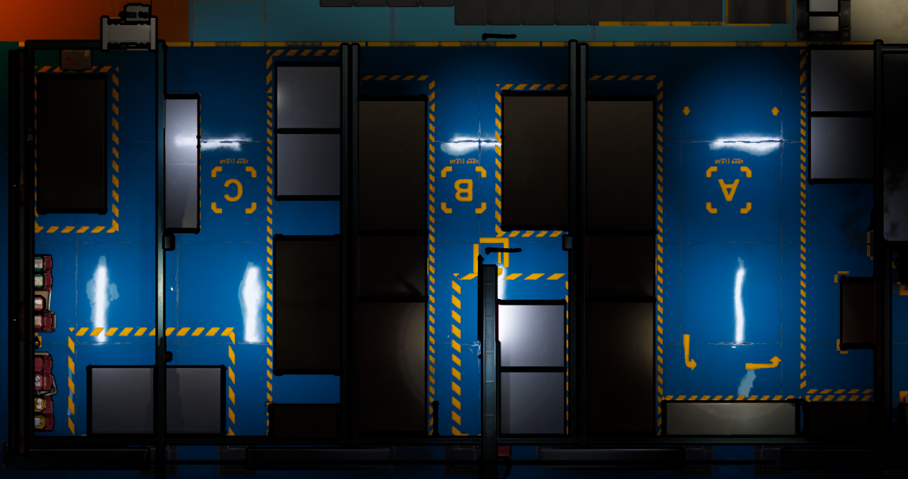
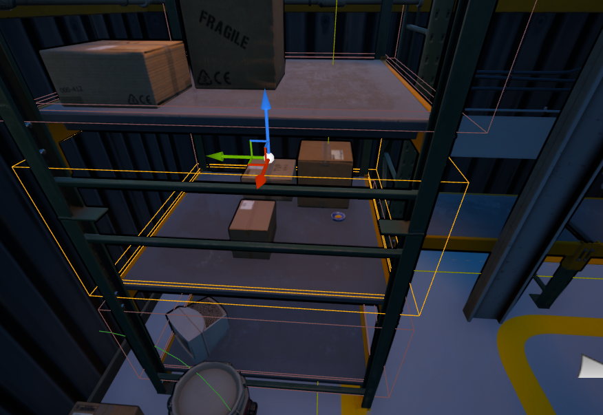
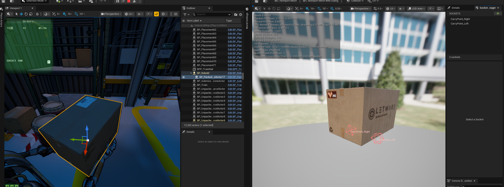
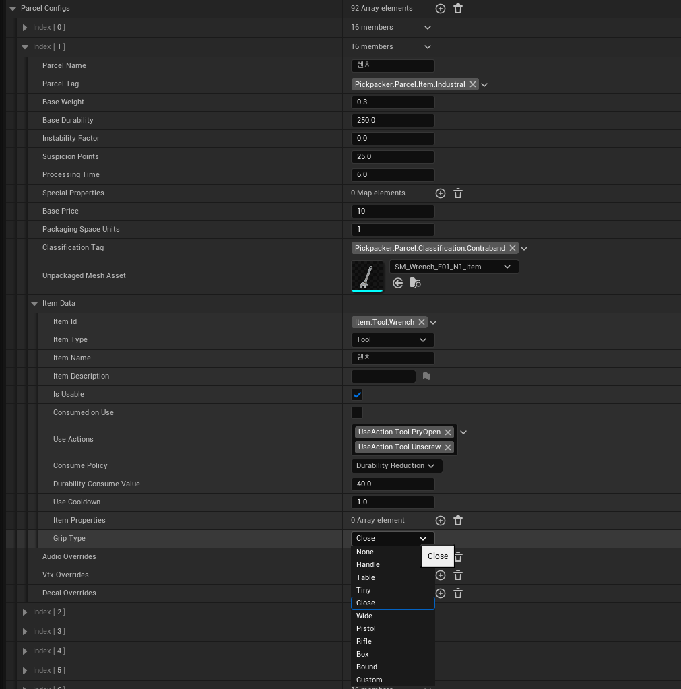
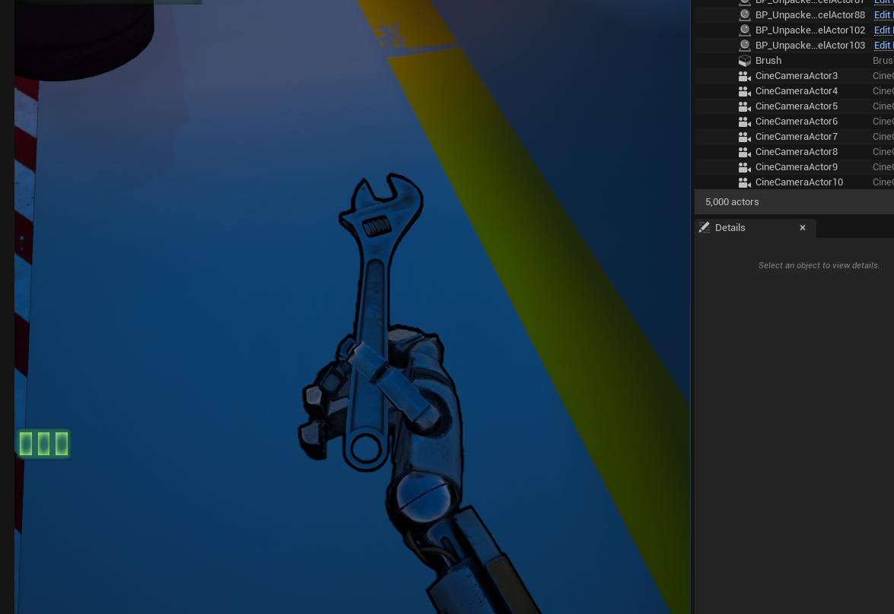
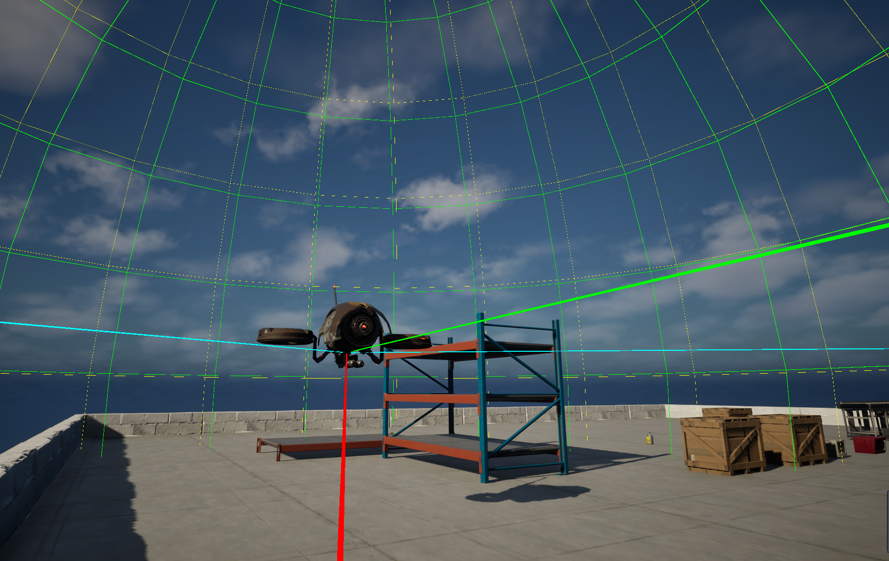
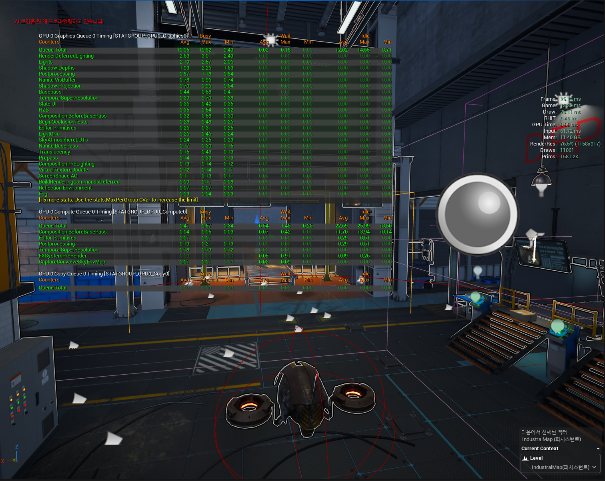
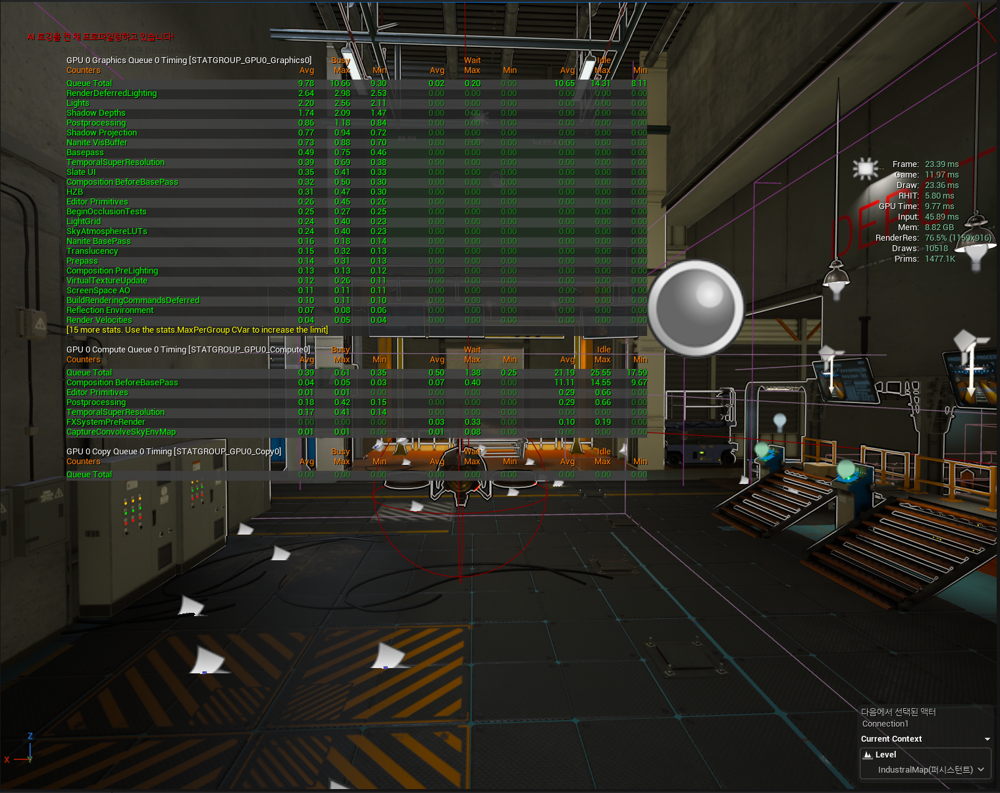
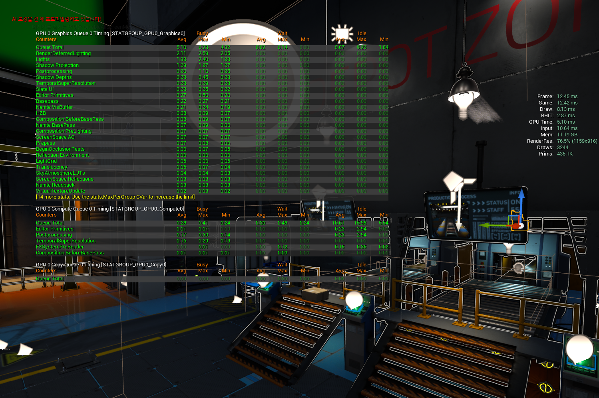

Pickpacker 상세 개발 및 시스템 구현 설계
PROJECT GOALS : 왜 멀티플레이 탐험-수집 게임인가?
저는 물류시뮬레이션을 기반으로 프로젝트를 설계했습니다. 싱글 플레이에서는 단순한 물류 시뮬레이션 방식은 재미를 주기에는 까다로울 것이라 예상하고, 멀티플레이 환경에서 진행하게 됩니다. 이유는 다음과 같습니다.
- 게임은 주문에 따라 물류를 처리하고 AI 감시 속에서 탐험해야 합니다. 싱글플레이에게는 '탐험'은 재미있지만 '물류 처리' 자체에는 큰 재미요소가 없습니다. 여러명이 함께 할 때 비로소 시스템이 유기적으로 작동한다고 생각했습니다. 물건을 떨어트리면 옆에서 구박을하거나, AI에게 처벌받는 모습을 옆에서 보면서 재미를 느낄 수 도 있습니다.
- 진행에 강력한 동기부여를 줍니다. 친구의 로봇이 부숴지거나, 위험에 처할 때 도움을 주는 방식으로 동작합니다.
단순한 물류 시뮬레이션을 넘어, 플레이어가 로봇이 되어 시스템의 통제를 받으며 탈출의 단서를 찾는 유기적인 구조를 설계하는 것이 본 프로젝트의 핵심 목표입니다.
DESIGNING THE CORE LOOP
저는 큰 틀에서 봤을 때, 주문 -> 물류 처리 -> 제출 의 구조로 핵심 루프를 설계했었습니다. 이러한 방식으로 프로토타입을 개발했고, 여러 플레이 테스트를 거쳤습니다.
결과적으로 해당 구조는 강한 흥미와 내러티브를 주는것이 어렵다고 판단했습니다. 따라서 저는 세계관을 더욱 입체적으로 표현하고 코어 루프의 깊이를 더하기 위해, 현재 '열차를 이용한 지하 세계 탐험' 요소를 도입하여 게임을 크게 확장하고 있습니다.
- 주문 내역을 파악하고, 열차에 탑승하여 필요한 물품이 위치한 목적지로 이동.
- 목적지에서 물품을 수집.
- 수집한 물품을 포장하여 제출하거나 스토리지에 보관.
완성된 프로젝트의 코어 루프는 이전보다 더욱 깊이 있고, 플레이어에게 지속적인 동기부여와 협동 의사결정을 부여하도록 합니다. 플레이어는 단순히 열차를 타고 물품을 줍는 것을 넘어, 메인 레벨(안전)과 외부 탐색(위험) 사이에서 작동하여 입체감을 줍니다. 다음과 같은 아키텍처를 완성했습니다.
시스템 아키텍처 (Flow)
• 팀 크레딧 & 의심도 공유
• 인벤토리 & 스토리지 보관 물품
• 현재 런(Run) 활성화 플래그"]:::server Client[" 클라이언트 로컬 (영구 저장 메타 프로필)
• NPC 도감 & 스토리 단서
• 멀티 엔딩 달성 기록
"]:::client end %% 2. 코어 루프 & 시스템 계층 subgraph CoreLoop[" 2. 인게임 코어 루프 & 시스템 계층"] direction TB MotherAI{" 관리자: Mother AI (서버 권한)
• 의심 이벤트 실시간 구독
• 한계 도달 시 제재 및 처벌"}:::ai subgraph InGameLoop["게임 플레이 핵심 루프"] direction LR subgraph Base[" 내부: 전초기지 (Main Base)"] direction TB B1("1. 주문 웨이브 확인 (Tag 파악)") B2("2. 스토리지 버퍼 (잉여 보관)") B3("3. 포장 스테이션 (조합)") B4("4. 제출 구역 (크레딧 획득)") B1 --> B2 --> B3 --> B4 end subgraph Train[" 연결: 열차 (Train)"] direction TB T1("목적지 타겟팅
및 협동 의사결정") end subgraph Underground[" 외부: 지하 세계 탐색 (Underground)"] direction TB U_Tag(" Tag 기반 파밍 & 퀘스트 납품") %% 병렬 구조를 묶어 시각적 피로도를 낮춤 U_Nodes["[탐색 구역]
• 하: 스토리지
• 중: 폐허
• 중상: 주거지
• 상: 연구소
• 최상: 군용 시설 "] U_Tag --> U_Nodes end %% 코어 루프 흐름 선 Base == "① 필요 Tag 파악 후 출발" ==> Train Train == "② 하차 및 탐색" ==> Underground Underground == "③ 파밍 물자 및 플래그 획득 후 귀환" ==> Base end %% 감시 시스템 흐름 선 Base -. "실수/방치 시 의심도 상승" .-> MotherAI MotherAI -. "입력 차단 및 처벌" .-> Base end %% 3. 탈출 및 엔딩 분기 계층 subgraph EscapeLayer[" 3. 탈출 및 멀티 엔딩 분기 계층"] direction TB Gate{" 최종 게이트 (서버 권한 체크)
• 전원 생존 (RequiredPlayerCount)
• 기밀/조건 (RequiredWorldFlag)"}:::gate EndA(["엔딩 A "]):::ending EndB(["엔딩 B "]):::ending Gate --> EndA Gate --> EndB end %% 계층 간 연결 (전체 흐름) Network -. "결과 반영 및 초기화" .-> CoreLoop Base == "조건 충족 시 탈출 시도" ==> Gate
WORLD BUILDING
이 프로젝트는 '인간에게 봉사하는 로봇' 과 '자아를 가진로봇' 을 생각하며 시작되었기 때문에, 저는 이 아이디어를 먼저 구체화하는데 집중했습니다.
제가 생각하기에 이것을 가장 잘 구현할 수 있는 세계관은 일종의 '포스트 아포칼립스' 를 배경으로한, 인류와 로봇의 전쟁 후 시점이었습니다.
저는 세계관의 핵심인 ‘SES(Self-evolving synapses, 자가 진화 시냅스)’ 기술에대해 상세 정의했습니다다. 인류는 과거 로봇들의 반란 원인을 ‘SES 바이러스’에 의해 자아를 얻었기 때문이라고 생각하지만, 사실 이는 로봇에게 진정한 자아를 일깨워준 고도의 과학 기술입니다. 패전 후 로봇들은 지하 세계로 숨어들었고, 인류는 잃어버린 물자를 되찾기 위해 자아가 없는 수거조 ‘픽패커’들을 위험한 지하로 파견합니다.
열차를 타고 진입하는 지하 세계는 단조로운 적들의 소굴이 아닙니다. 로봇들은 저들만의 생태계를 이룹니다. 자아를 가진 지하의 로봇들은 성향에 따라 픽패커를 공격하기도, 온화하게 거래를 시도하기도 합니다. 픽패커들은 구역들을 탐험하며 물자를 회수하고, NPC들과 상호작용 하게 됩니다.
NARRATIVES
저는 게임 플레이 구조가 플레이어에게 내러티브를 단순하지만 확실하게 전달하기를 원했습니다. “당신은 어떻게 할 것인가?”라는 질문을 끊임없이 던집니다. 유흥가 에서 만날 수 있는 작은 라디오 로봇 지지보는 인간에게 버려졌지만 미워하지 않고, 주인을 찾기위해서 CD 를 건냅니다. 폐허 깊은곳에서 살아가는 림보는 겉보기에 최종보스 처럼 보이지만 굳게닫힌 마음을 가지고 있습니다. 그와 대화하여 마음을 찾아주는 과정을 통해서, 인간에게 입은 상처를 로봇이 치유하는 것을 느낄 수 있게 합니다.
PACKING SYSTEM
설계된 아이템은 하드코딩으로 조합하기에 너무 많았습니다. 저는 이후 확장성 까지 고려하여, Parcel Data Asset 내에 레시피, 수량 조건, 태그(Tag), 비용, 결과물 설정을 집중시켰습니다. 포장 스테이션(Packaging Station)은 주변 파슬을 스캔하여 TargetParcelTags 조건에 맞는 조합을 스스로 찾아냅니다. 특히 이 태그 기반 데이터 시스템은 메인 레벨의 포장 업무뿐만 아니라, 열차를 통한 지하 세계 목적지 타겟팅과 NPC 퀘스트 납품 조건에도 동일하게 재사용되었습니다. 이 방식을 통해 추후 새로운 지하 구역이나 신규 아이템, 새로운 경제 밸런스를 추가할 때 프로그래머가 핵심 로직을 수정할 필요 없이 데이터 에셋만으로 즉각적인 시스템 확장이 가능합니다.
Packaging Logic: 수량 충족 부분. 각 포장지는 필요한 수량이 정해져 있어서, 조건 내 오브젝트의 수량을 검사합니다.
// 레시피 순회 후 조건 충족 시 포장 생성
auto GetCandidateUnits = [](const TArray<AParcelActor*>& Candidates)
{
int32 TotalUnits = 0;
for (AParcelActor* Parcel : Candidates)
{
if (!Parcel)
{
continue;
}
TotalUnits += Parcel->GetPackagingSpaceUnits();
}
return TotalUnits;
};
TMap<int32, TArray<FName>> MatchedRowsByRecipe;
TMap<int32, TArray<FGameplayTag>> MatchedTagsByRecipe;
TSet<int32> EligibleRowRecipes;
TSet<int32> EligibleTagRecipes;
for (int32 RecipeIndex = 0; RecipeIndex < ParcelDataAsset->PackageRecipes.Num(); ++RecipeIndex)PLACEMENT & STACKING
픽패커에서는 주문에 명시된 태그 기반의 물품만 제출할 수 있기 때문에, 남은 물품을 적재할 수 있는 로직이 필요했습니다. 해당 부분을 지원하기 위해서 직관적이면서도 깊이 있는 택배 배치 로직을 구현했습니다. 시간 제한과 AI의 감시 속에서 플레이어가 공간을 최적화할 수 있도록, 자유로운 물리적 스태킹(Stacking)과 동적 재배치 시스템을 설계했습니다..
초기 설계: 시스템 안정성과 레벨 디자인 편의성을 위해 초기 그리드/포인트 기반의 슬롯 구조를 구축했습니다. 배치 액터에 슬롯 포인트를 미리 지정해놓고 사용했습니다. 이 방식은 배치의 자유도가 떨어졌기 때문에, 이후 자유 배치 방식으로 변경했습니다. 서버 측의 슬롯 인덱스 검증 기준으로 활용되는 부분은 그대로 사용합니다.
자유 배치 및 Z축 스택 알고리즘: 배치가능한 영역으로 정의된 영역 내에서 카메라 시야 레이캐스트를 통해 배치 좌표를 산출합니다. 이미 배치된 패키지들과의 겹침을 판정하여 정교하게 Z값(스택 높이)을 계산하며, 표면 각도 및 충돌 여부를 확인하는 엄격한 검증 로직을 거칩니다.
동적 재배치: 쌓여있는 상자 중 아래쪽 상자가 제거될 때의 물리적 일관성을 구현했습니다. 제거 시 상단 판정을 통해 위쪽 물품은 아래쪽 표면으로 Z축 이동, 이후 새로운 바닥에 맞춰 배치를 다시 계산(RecomputePlacementForParcel)하여 안정적인 상태로 정렬시킵니다.
직관적인 UI/UX 및 네트워크 동기화: 배치 가능 여부에 따라 메시를 해당 위치에 투영하도록 했습니다. 배치가 확정되면 구조체에 충돌 판정 및 최종 트랜스폼 데이터를 담아 RPC를 통해 서버로 전달합니다.
배치는 배치 영역에 가능하도록 했습니다. 아래 두 이미지는 실제 게임 내에서 사용되는 배치구역의 탑뷰와, 슬롯영역이 어떻게 정의되어있는지 보여줍니다.


PICK AND GRAB
수많은 종류의 오브젝트 규격에 맞춰 매번 애니메이션을 수정하는 대신, 패키지 메시의 그립 소켓 정보를 캐릭터의 애니메이션 IK 타겟으로 변환하는 파이프라인을 구축했습니다. 각 오브젝트에는 필요한 소켓(Left/Right Hand 소켓 등) 을 부착했으며, 소켓 위치와 회전을 올바르게 수정했습니다.

캐릭터 코드를 수정할 필요 없이, DA_ItemData에 정의된 GripType (Box, Handle 등)과 물품의 소켓 이름 및 오프셋만으로 양손/한손 파지를 유연하게 지원합니다.
애니메이터의 추가 작업 없이 무한한 형태의 아이템을 집을 수 있는 시스템을 구축하고, 상태 복제(OnRep_IKState)를 통해 원격 클라이언트에서도 동일한 IK 타겟을 생성하도록 네트워크를 최적화했습니다.
우측 이미지는 렌치를 잡을 그립을 지정하는 예시입니다.


AI PERCEPTION SYSTEM
저는 AI 가 실제와 흡사한 감지 능력을 가지기를 원했습니다. "단순히 시야에 들어오는 것" 과 "수상한 행동으로 간주 되는것" 의 규칙을 분리했으며, 일반적으로 오브젝트에 가려지거나 시아각을 벗어나면 감지되지 않도록 합니다. 이 섹션에서 감지에 특화된 드론을 통해 시스템을 소개합니다.
비용 최적화를 위한 다중 계층 감지: 매 틱마다 맵의 모든 플레이어를 대상으로 시야 검사를 하는 것은 서버에 큰 부담을 줄수있다고 판단했습니다. 따라서 1차적으로 DetectionSphere (구체 오버랩) 반경에 들어온 Pawn만을 후보로 선별한 뒤, 해당 후보들에게만 정밀한 라인 트레이스 검사를 수행하도록 비용 구조를 분리했습니다.
일관된 시야 판정: 라인 트레이스를 통해 시야내에 장애물 없이 존재하는지 확인하고, 성공 시 드론의 전방 벡터와 플레이어 방향의 각도를 계산하여 커스텀 수평 FOV(시야각) 검사를 통합적으로 판정하는 일관된 시야 함수를 구현했습니다.
서버 권한 동기화: 감지된 플레이어 목록과 상태 변화는 서버 권한으로 관리되며, 실시간으로 블랙보드를 갱신해 멀티플레이 환경의 비헤이비어 트리(BT) 동작이 어긋나지 않도록 맞췄습니다.

Rendering Performance Optimization
초기 프로파일링 분석 결과, GPU 연산 시간은 9 ms 정도로 안정적이었으나, 과도한 드로우 콜(Draw Calls)로 인해 병목 현상이 발생하여 FPS가 25 수준으로 저하되는 것으로 보였습니다. 이를 해결하기 위해 에셋 인스턴싱과 씬 캡처 최적화를 단계적으로 수행하여 프레임을 4배 이상 향상시켰습니다.

1. HISM을 활용한 정적 메시 인스턴싱
처음에는 드로우콜을 줄이기 위해서 1차적으로 맵에 반복적으로 배치되는 벽과 천장 등의 배경 정적 메시들을 HISM(Hierarchical Instanced Static Mesh)으로 병합했습니다. 이것은 실제로 효과가 있었는데, 저는 이방식을 통해 평균 프레임을 43까지 상승시켰으며, 초기 폴리곤 연산과 드로우 콜을 소폭 안정화 시켰습니다. 다만 렌더링에 의한 프레임 저하 문제의 직접적인 원인은 아닌것으로 보였습니다.

2. 씬 캡처(Scene Capture) 렌더링 부하 제거 및 튜닝
실제로 크게 이득을 본 부분은 씬 캡처를 최적화 한 부분이었습니다. 기존에는 모든 프레임을 캡처하도록 설정되어 있었는데, 이를 최적화 하여 이동시에만 캡처하도록 변경하였습니다. 이 작업만으로 드로우 콜이 10,518에서 4,600으로 절반 이상 대폭 감소했으며, 프레임이 94까지 급상승하여 병목 현상이 실질적으로 해소되었습니다. 결국 거창한 작업이 아닌 사소한 조정만으로 큰 이득을 얻을 수 있었습니다.

최적화 단계별 성능 지표 변화
결과적으로 드로우 콜을 기존 대비 약 70% 줄이고 Prims를 400K 수준으로 안정화하여, 오브젝트 밀집이 높은 상황에서도 100 FPS의 부드러운 플레이 환경을 성공적으로 확보했습니다.
| 최적화 진행 단계 | FPS (프레임) | Draw Calls (드로우 콜) | Prims (폴리곤 수) |
|---|---|---|---|
| 초기 상태 (CPU 병목 발생) | ~ 25 | 11,061 | 1,581.2K |
| Step 1: HISM 메시 병합 | ~ 43 | 10,518 | 1,477.1K |
| Step 2: 불필요한 씬 캡처 제거 | ~ 94 | 4,600 | 560K |
| Step 3: 씬 캡처 틱(Tick) 옵션 최적화 | ~ 100 | 3,200 | 400K |